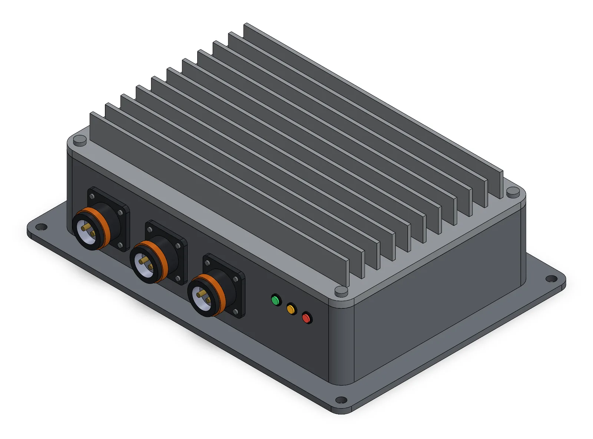
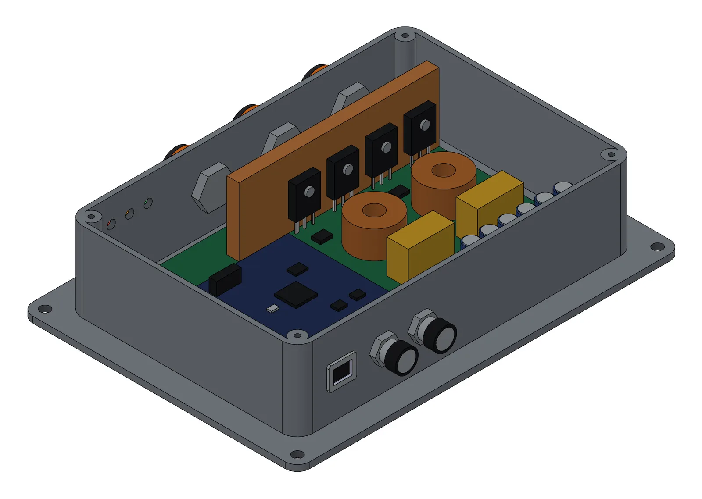
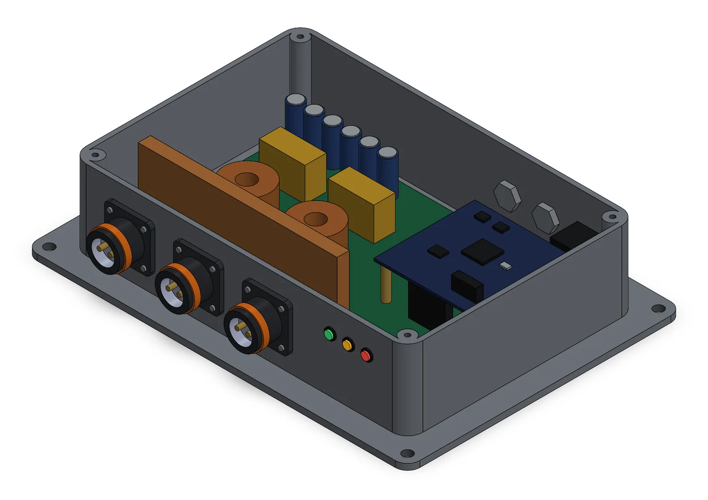
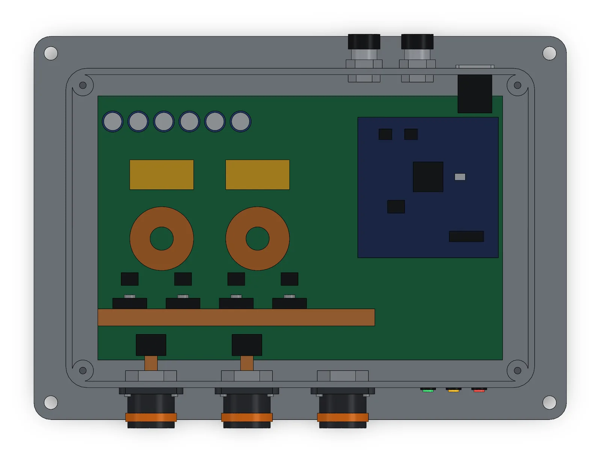

NASA L’SPACE proposal
I was principal investigator for a 10-person team from several universities, and I led our proposal for a Moon-base power grid that would repair itself. I owned the system architecture and the CAD.
- Role
- Principal investigator
- Team
- 10 people, multi-university
- Program
- NASA L’SPACE NPWEE Academy, Jan–May 2026
- Focus
- System architecture, CAD, prototype integration

Summary
We proposed an Autonomous Modular Power Distribution and Recovery Node. It’s a smart hub on a DC microgrid, a small self-contained power network that runs on direct current. The node would watch its own electrical and thermal state, spot faults, isolate the faulty module, and reroute power to the priority loads, all with no human involved. We pitched it to NASA mentors at a 4-hour panel.
This was a proposal, not a built device. The numbers below are design targets taken from published research, and I didn’t measure any of them. The build plan is still only a plan, and none of that work has been done.
Problem
A power system on the Moon has to keep running through faults, radiation, and big temperature swings. Nobody on Earth can step in quickly, since a radio signal takes about 2.6 seconds to reach the Moon and come back.
- Today’s advanced microgrids rely on a single master controller. If it fails, the whole grid can go down.
- They usually take 50–100 ms to detect a fault and switch to a backup. Sensitive electronics can reset if the power drops for more than 10–20 ms.
- They’re reactive, and they wait for a human to authorize a reroute.
Design
Each node would combine bidirectional power converters, voltage and current sensors, fast solid-state switches, and embedded control hardware. The nodes would be spread through habitats, rovers, and payloads, so the grid would have no single point of failure.
Control would run in two layers, so isolating a fault never depends on the nodes talking to each other. Layer 1 is local to each node and would respond in microseconds. It uses hardcoded droop control and a di/dt trip, which cuts the circuit when current rises too fast. Layer 2 lets the nodes reach agreement over a CAN bus within milliseconds. It tunes the droop coefficients and load priority.
We set design targets for the node. It would convert power at about 98% efficiency, and its voltage would respond to transients within 10–15 ms. It would isolate a fault within 15 ms using solid-state protection. In high-voltage systems, the output ripple would be about 1–2 V.
I modeled the node in SolidWorks for the proposal, but the file was later corrupted. The model shown here is a rebuild I made with AI assistance, following the proposal’s parts list and the architecture I led. Its dimensions are illustrative.
The model puts the proposal’s parts in one sealed aluminum box:
- Power path. DC bus A and bus B come in on the front, next to a priority-load output. A current sensor sits behind each input, and four silicon-carbide solid-state switches are clamped to a copper bar.
- Heat path. There’s no air on the Moon to carry heat away. So the copper bar runs up into a finned radiator lid, and the flanged base bolts to a cold plate.
- Conversion. Each of the two bidirectional converter stages has a toroidal inductor and a film capacitor, and a bank of six capacitors steadies the DC bus.
- Control. A separate controller board on standoffs carries the microcontroller and CAN transceivers. The CAN in and CAN out ports on the back link the nodes one after another for Layer 2. A telemetry port sits beside them.
Build
We planned to build a lab-scale demonstration unit and testbed in four phases of about three months each. That would leave a three-month buffer before the Artemis VI landing. The team would work in Scrum sprints and track tickets in Jira at about 10 story points per person per week.
| Phase | When | Work | Milestone |
|---|---|---|---|
| 1. Design | Jul–Sep 2026 | System architecture, MATLAB microgrid modeling, fault-detection logic, material selection | Architecture approved, demo for stakeholders |
| 2. Build | Oct–Dec 2026 | High-power parts, C++ control kernel, PCB assembly, Python telemetry | Hardware prototype, power-on self-test |
| 3. Integration | Jan–Mar 2027 | C++ into switchgear, sensor calibration for lunar conditions, life-support energy simulations | Integrated modular node |
| 4. Testing | Apr–Jun 2027 | Fault injection, stress testing across day and night cycles, 30-day hardware-in-the-loop run | Proof of concept, final risk analysis, test readiness report |
We estimated 2,800 hours in total. That breaks down to 450 for project management, 950 for hardware, 800 for software, and 600 for testing and telemetry validation.
Testing and iteration
Because this is a proposal, the testing here is only planned. The proposal names four hard problems and how we would handle each one.
- DC faults are hard to detect. DC current never passes through zero on its own the way AC current does, and fault current can pass 10 times its rating within 5 ms. Our answer was di/dt threshold detection at each converter output, paired with silicon-carbide solid-state breakers that interrupt in 1–10 microseconds.
- Earth can’t intervene. The two-layer design covers this, because isolating a fault never waits on the nodes talking to each other.
- Several time scales at once. A missed interrupt can add 1–2 ms. The plan was bare-metal firmware or firmware on a real-time operating system (RTOS), either way with fixed interrupt priority. Gate drivers with Miller clamps would keep the switches from turning on by mistake.
- No qualification standard covers −233 °C to +127 °C. We planned hardware-in-the-loop testing instead, where real hardware runs against a simulation, on a low-cost FPGA board with a capacitor bank to inject faults. Flight qualification would come later, in a phase 2.
Results
- Sent NASA the full proposal, including a 12-month, 4-phase build-and-test plan
- Pitched to NASA mentors at a 4-hour panel
- Submitted a NASA New Technology Report (Form 1679) on the design, with me listed as Innovator #1
- Set a target of isolating faults in under 15 ms, compared with 50–100 ms in current microgrids
What I’d change
I connected with each team member personally. The more important job was connecting them with each other, and next time I’d do more of that.
Gallery


